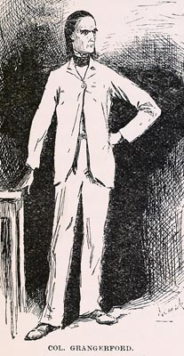

"Col. Grangerford was very tall and very slim, and had a
darkish-paly complexion, not a sign of red in it anywheres; he
was clean-shaved every morning, all over his thin face, and he
had the thinnest kind of nostrils, and a high nose, and heavy
eyebrows, and the blackest kind of eyes, sunk so deep back that
they seemed like he was looking out of caverns at you, as you may
say. His forehead was high, and his hair was black and straight,
and hung to his shoulders. His hands was long and thin . . ."